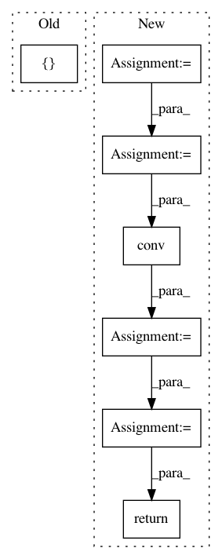

b2074ddf9d8bc2069d66976fea58a52f40238496,pretrainedmodels/nasnet.py,CellStem1,forward,#CellStem1#Any#Any#,120
Before Change
x_left_1 = self.pool_1(x_left)
x_left_1 = self.conv_1(x_left_1)
x_left = torch.cat([x_left_0, x_left_1], 1)
x_left = self.bn_left(x_left)
x_right = F.relu(x_right)
After Change
// path 1
x_path1 = self.path_1(x_relu)
// path 2
x_path2 = self.path_2.pad(x_relu)
x_path2 = x_path2[:, :, 1:, 1:]
x_path2 = self.path_2.avgpool(x_path2)
x_path2 = self.path_2.conv(x_path2)
// final path
x_right = self.final_path_bn(torch.cat([x_path1, x_path2], 1))
x_comb_iter_0_left = self.comb_iter_0_left(x_left)
x_comb_iter_0_right = self.comb_iter_0_right(x_right)
x_comb_iter_0 = x_comb_iter_0_left + x_comb_iter_0_right
x_comb_iter_1_left = self.comb_iter_1_left(x_left)
x_comb_iter_1_right = self.comb_iter_1_right(x_right)
x_comb_iter_1 = x_comb_iter_1_left + x_comb_iter_1_right
x_comb_iter_2_left = self.comb_iter_2_left(x_left)
x_comb_iter_2_right = self.comb_iter_2_right(x_right)
x_comb_iter_2 = x_comb_iter_2_left + x_comb_iter_2_right
x_comb_iter_3_right = self.comb_iter_3_right(x_comb_iter_0)
x_comb_iter_3 = x_comb_iter_3_right + x_comb_iter_1
x_comb_iter_4_left = self.comb_iter_4_left(x_comb_iter_0)
x_comb_iter_4_right = self.comb_iter_4_right(x_left)
x_comb_iter_4 = x_comb_iter_4_left + x_comb_iter_4_right
x_out = torch.cat([x_comb_iter_1, x_comb_iter_2, x_comb_iter_3, x_comb_iter_4], 1)
return x_out
class FirstCell(nn.Module):
In pattern: SUPERPATTERN
Frequency: 3
Non-data size: 7
Instances
Project Name: Cadene/pretrained-models.pytorch
Commit Name: b2074ddf9d8bc2069d66976fea58a52f40238496
Time: 2017-11-16
Author: remi.cadene@icloud.com
File Name: pretrainedmodels/nasnet.py
Class Name: CellStem1
Method Name: forward
Project Name: jhfjhfj1/autokeras
Commit Name: 9a387157f03916b2f4f9f63647792dca39942471
Time: 2018-03-29
Author: jin@tamu.edu
File Name: autokeras/generator.py
Class Name: DefaultClassifierGenerator
Method Name: generate